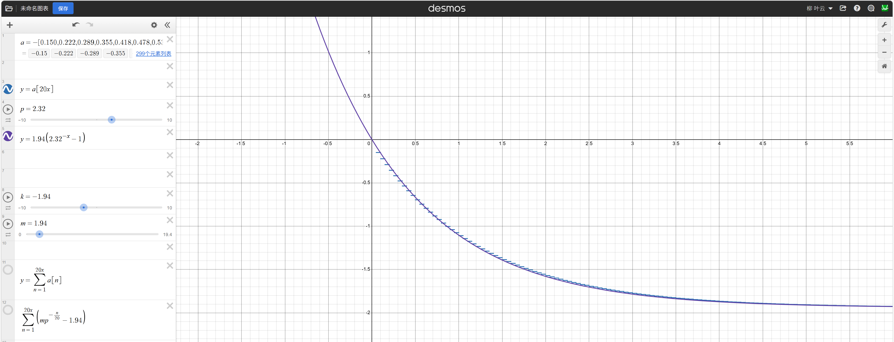
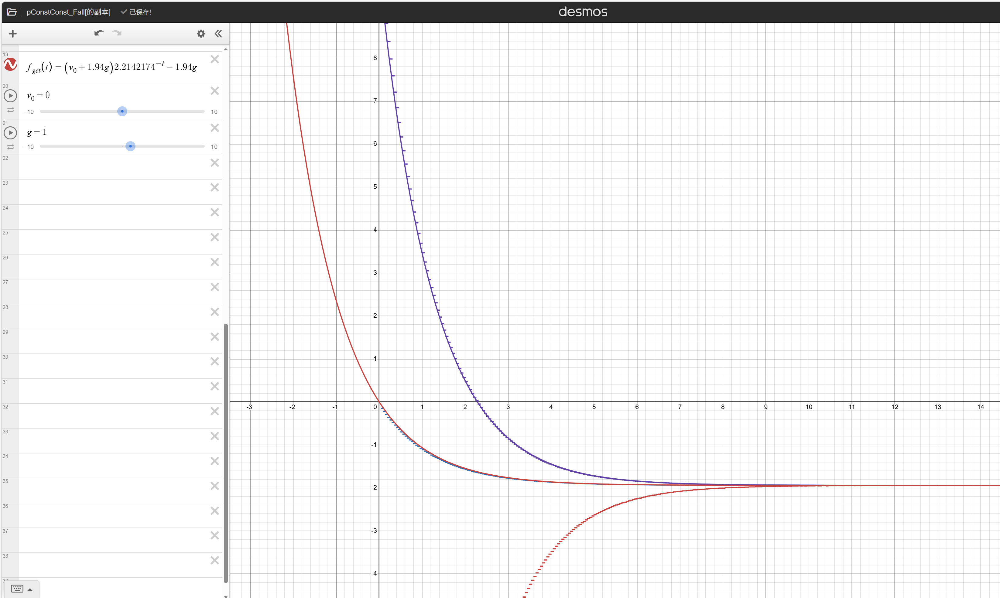

常量
下落
在迷你世界中，下落速度最快约是 1.94 B / Tick。
具体计算可在 计算 中尝试。
将每 Tick 的下落速度和 前缀和 结合，可以得到下落总距离。
记得乘上重力！默认为 1.0
以下为自由下落近似函数与图：y = 1.94 g ( 2.32 ^ {-t} - 1 )
y为下落速度(b/t)，g为重力，t为时间(sec)：y = 1.94 g ( 2.32 -t - 1 )

以下为带初速度近似函数与图：y = (v_0 + 1.94g) 2.2142174^{-t} - 1.94g
y为下落速度(b/t)，g为重力，v0为初速度，t为时间(sec)：y = (v0 + 1.94g) 2.2142174-t - 1.94g

走路和奔跑
在迷你世界中，不奔跑，前行速度最快约是 0.21 B / Tick。( 奔跑速度约是普通速度的 1.32 倍 )
具体计算可在 计算 中尝试。
将每 Tick 的前行速度和 前缀和 结合，可以得到前行总距离。
记得带上移动速度！玩家默认为 10 ，那么速度倍数就是 新的移动速度 ÷ 10 。
生物默认为 5.5 ，那么速度倍数就是 0.55 。
跳跃
在迷你世界中，跳跃速度一般从 0.4 B / Tick起步。( 即 跳跃力÷100 , 不一般是在跳跃力为其他的时候 )
具体计算可在 计算 中尝试。
该部分我暂未研究透彻，请自行测试。
根据 下落 所展示公式可反推出：t = - log 2.2142174 ( (y + 1.94g)/(v0 + 1.94g) )
即：
ln( (v0 + 1.94 * g) / (y + 1.94 * g) ) / ln(2.2142174)
跳跃力记牢了！玩家默认为 40